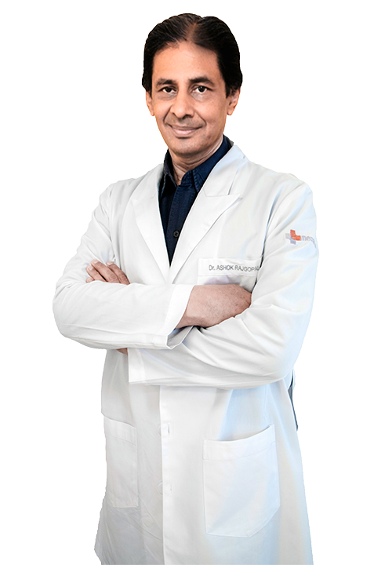

Dr. Ashok Rajgopal
Orthopaedics · Joint Replacement
Listed hospital association: Medanta, Gurugram · Delhi NCR
Request Consultation through Elajme IndiaProfile overview
Dr. Ashok Rajgopal is listed in orthopaedics and joint replacement care in Gurugram. Elajme India supports international patients by coordinating medical-report review, consultation requests and communication with the relevant hospital team. Current doctor details, hospital association and availability are reconfirmed during coordination.